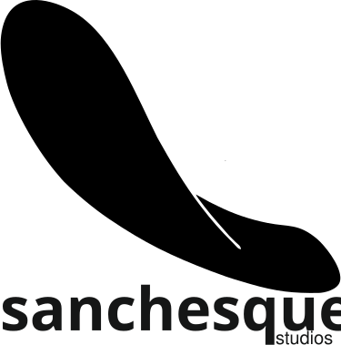

Talento de aquí
Aprovechar el talento increíble que existe en las islas —o que ha emigrado fuera— para desarrollar productos que se puedan exportar desde Canarias.
estudio creativo digital · islas canarias
Creamos contenidos digitales —desde software hasta eventos y diseño— con la huella de las islas en cada proyecto.

Un estudio de creación de contenidos digitales con base en las Islas Canarias: desde el desarrollo de software hasta la organización de eventos puramente digitales, pasando por el diseño.
Aprovechar el talento increíble que existe en las islas —o que ha emigrado fuera— para desarrollar productos que se puedan exportar desde Canarias.
Dar a conocer el potencial que existe en las islas para generar valor.
Generar sinergias en el tejido productivo digital canario.
Para muchas personas las raíces marcan parte de su vida, y para el estudio no iba a ser menos, ya que tiene personalidad propia. En la fundación del estudio se marcó un principio claro: el desarrollo desde Canarias, aportando valor a las islas y dejando la huella «chola» en todos nuestros trabajos. Y más importante aún, es un alegato a todas esas madres que son capaces de darle nombres a objetos que hijos e hijas siempre recordarán.
Sanchesque viene del uso coloquial y deformado de la marca Sancheski en las islas, aunque según la Academia Canaria de la Lengua se corresponde con el homónimo de la marca. Es común escuchar «sanchesque» de residentes de cierta edad en lugar del nombre correctamente pronunciado. Esta empresa fue la primera en vender «skates» —monopatines, para los rigurosos con el idioma— en España, allá por los años 60, lo que hizo que popularmente se conociera a éstos con el nombre de su marca.
Entonces, ¿el logotipo es un skate?
Se podría decir que es un skatechola: la chola es un sello de identidad de las islas, pero el skate le da nombre al estudio. Así que no puede ser ni una ni otro: es lo que le da carácter.
Cuéntanos qué tienes entre manos. Respondemos rápido y con ideas concretas en sanchesque.com.